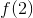
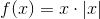
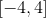
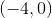
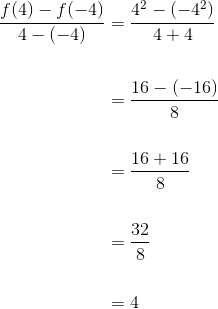
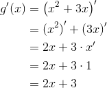
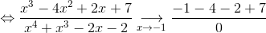
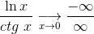

Proprietăți ale funcțiilor derivabile
Pentru a putea introduce aplicațiile funcțiilor derivabile trebuie să introducem noțiunile de punct de maxim local, punct de minim local, punct de maxim global și punct de minim global, numite pe scurt puncte de extrem.
Fie  un interval de numere reale, funcția
un interval de numere reale, funcția  și
și  .
.
Definiția FD13: Punct de maxim local. Punct de minim local
- Punctul
 se numește punct de maxim local pentru funcția
se numește punct de maxim local pentru funcția  dacă există o vecinătate
dacă există o vecinătate  astfel încât , pentru orice . În acest caz, se numește valoare maximă locală sau maxim local pentru funcția .
astfel încât , pentru orice . În acest caz, se numește valoare maximă locală sau maxim local pentru funcția . - Punctul se numește punct de minim local pentru funcția dacă există o vecinătate astfel încât , pentru orice . Atunci, se numește valoare minimă locală sau minim local pentru funcția .
Pentru a-ți aminti definiția vecinătății unui punct, accesează secțiunea Șiruri de numere reale. Limite din cadrul ghidului Limite de șiruri.
Cu alte cuvinte, un punct este punct de maxim (minim) local dacă valoarea funcției în punctul considerat este cea mai mare (mică) pe o vecinătate a acelui punct.
Definiția FD14: (Punct de maxim global. Punct de minim global)
- Punctul este punct de maxim global pentru funcția dacă , pentru orice
 , iar se numește valoare maximă globală sau maxim global pentru funcția .
, iar se numește valoare maximă globală sau maxim global pentru funcția . - Punctul se numește punct de minim global pentru funcția dacă , oricare ar fi . Atunci, se numește valoare minimă globală sau minim global pentru funcția .
Altfel spus, un punct este punct de maxim (minim) global dacă valoarea funcției în acel punct este cea mai mare (mică) în comparație cu orice altă valoare calculată în punctele domeniului de definiție al funcției date.
Exemplu:
Fie funcția reală , având graficul de mai jos:

Din grafic, se observă că:
- este punct de minim global;
- este punct de maxim local;
- este punct de minim local;
- este punct de maxim global.
Teoremele care vor fi prezentate în paginile următoare se numesc teoreme de medie în analiza matematică.
Teorema lui Fermat
Fie un interval de numere reale.
Teorema FD15: Teorema lui Fermat
Fie funcția derivabilă și . Dacă este punct de extrem local, atunci .
Definiția FD16: Puncte critice
Punctele în care prima derivată se anulează se numesc puncte critice.
Exemplu:
Fie funcția  , . Să se studieze dacă
, . Să se studieze dacă  este punct de maxim al funcției .
este punct de maxim al funcției .
Rezolvare:
Funcția este continuă și derivabilă pe fiind compusă din funcții elementare continue și derivabile pe .
Atunci avem:
.
Dar
.
.
Deci este punct de maxim al funcției date.
Conform Teormei FD15: Teorema lui Fermat vom avea că .
Verificare:
Aflăm .
.
Atunci este:
.
Teorema lui Rolle
Teorema FD17: Teorema lui Rolle
Fie ![f:\left [ a,b \right ]\to \mathbb{R}](../media/webbooks/397/2635/images/equations/puc7ryq-emo-el0jqiox6a==.gif) .
.
Dacă
- e continuă pe
![\left [ a,b \right ]](../media/webbooks/397/2635/images/equations/d8te1mfmbckg5qjynvqxzw==.gif) ;
; - e derivabilă pe
 ;
; - ,
atunci există , astfel încât .
Interpretare geometrică
Dacă o funcție îndeplinește condițiile din Teorema lui Rolle, atunci există cel puțin un punct în care tangenta la grafic este paralelă cu axa  .
.
Funcția care prezintă toate condițiile din Teorema FD17 se numește funcție Rolle.
Astfel, avem că orice funcție Rolle admite cel puțin un punct de extrem.
Consecință:
Dacă o funcție :
- e continuă pe ;
- e derivabilă pe ;
 ,
,
atunci există cel puțin un , astfel încât .
( Între două  -uri consecutive ale funcției există cel puțin un al derivatei. )
-uri consecutive ale funcției există cel puțin un al derivatei. )
Exemplu:
Să se verifice dacă se poate aplica Teorema lui Rolle funcțiilor de mai jos și, în caz afirmativ, să se aplice:
- , ;
- , .
Rezolvare:
- Funcția este compusă din funcții elementare continue și derivabile pe , deci este continuă și derivabilă pe .
Astfel, îndeplinește condițiile  și
și  ale Teoremei FD17 (Teorema lui Rolle).
ale Teoremei FD17 (Teorema lui Rolle).
Calculăm și .
.
.
.
Atunci, conform Teoremei FD17 (Teorema lui Rolle) există , astfel încât .
Calculăm  .
.
.
Rezolvăm ecuația .
.
Graficul funcției date este:

Din graficul funcției putem observa că tangenta la grafic în punctul este paralelă cu axa  .
.
- Funcția este continuă și derivabilă pe deoarece este compusă din funcții elementare continue și derivabile pe .
Atunci îndeplinește condițiile și din Teorema FD17 (Teorema lui Rolle).
Verificăm dacă .
.
.
.
Așadar nu putem aplica Teorema FD17 (Teorema lui Rolle) pentru această funcție.
Teorema lui Lagrange
Teorema FD18: Teorema lui Lagrange
Fie funcția ,  , . Dacă
, . Dacă
- e continuă pe ;
- e derivabilă pe ;
atunci există cel puțin un , astfel încât .
Exemplu:
Verifică aplicabilitatea teoremei de mai sus pentru funcția , .
Rezolvare:
Scriem expresia funcției modul.
Atunci avem:
.
- Studiem continuitatea funcției pe intervalul .
Funcția este continuă pe intervalele și deoarece este compunere de funcții elementare pe fiecare dintre aceste intervale.
Rămâne să studiem continuitatea funcției în punctul  .
.
Calculăm limitele laterale în punctul .
.
0}}f(x) \\\\ &=\lim_{\substack{x\to 0 \\ x> 0}} x^2\\\\ &=0^2\\\\ &=0 \end{align*}">
.
Deci .
Funcția dată este continuă în .
Rezultă că este continuă pe .
- Studiem derivabilitatea funcției pe intervalul .
Deoarece este compunere de funcții elementare pe fiecare ramură, funcția este continuă și derivabilă pe intervalele  și .
Rămâne să arătăm că funcția este derivabilă în punctul .
Pentru aceasta, calculăm derivatele laterale ale funcției în punctul .
 .
.
0}}\frac{f(x)-f(0)}{x-0} \\ \\ &=\lim_{\substack{x\to 0 \\ x> 0}}\frac{x^2-0^2}{x}\\\\ &=\lim_{\substack{x\to 0 \\ x> 0}}\frac{x^2}{x}\\\\ &=\lim_{\substack{x\to 0 \\ x> 0}} x\\\\ &=0 \end{align*}">
.
.
Deci funcția este derivabilă în și .
Așadar, funcția este derivabilă pe .
Conform  și , rezultă că putem aplica Teorema FD18 (Teorema lui Lagrange). Deci există , astfel încât:
și , rezultă că putem aplica Teorema FD18 (Teorema lui Lagrange). Deci există , astfel încât:
.
Calculăm .

.
Calculăm derivata funcției pe fiecare ramură.
Dacă , atunci:
.
Pentru avem:
.
Rezolvăm ecuația în fiecare din cele două cazuri.
.
.
În concluzie, și .
Consecințe ale teoremei lui Lagrange
- Fie funcția , .
Dacă:
- e derivabilă pe ;
- e continuă în ;
- există ,
atunci e derivabilă în și .
- Fie
 două funcții derivabile pe
două funcții derivabile pe  . Dacă , atunci există
. Dacă , atunci există  , astfel încât , ceea ce este echivalent cu .
, astfel încât , ceea ce este echivalent cu .
(Adică două funcții care au derivatele egale, diferă printr-o constantă.)
Exemple:
- Să se studieze derivabilitatea funcției
 ,
,
1 \end{cases}">,
folosind consecința I a Teoremei lui Lagrange.
Rezolvare:
Studiem continuitatea funcției .
Funcția este continuă pe intervalele și , fiind compunere de funcții elementare pe fiecare din aceste intervale.
Studiem continuitatea funcției în punctul  .
.
.
1}}f(x) \\\\ &=\lim_{\substack{x\to1 \\ x> 1}} (x+\ln x)\\\\ &=1+\ln 1\\\\ &=1+0\\\\&=1\end{align*}">
.
Rezultă că .
Deci funcția este continuă în punctul .
Funcția este derivabilă pe fiecare din cele două ramuri ale sale, deoarece avem compuneri de funcții elementare.
Calculăm derivata funcției pe fiecare ramură.
Pentru avem:
Dacă ,atunci:
.
Calculăm derivatele laterale în .
.
1}}{f}'(x)\\\\ &=1+\frac{1}{1}\\\\&=1+1\\\\&=2 \end{align*}">
.
.
Din consecința I a Teoremei lui Lagrange, rezultă că funcția dată are derivată în și .
Deci funcția este derivabilă în punctul .
În concluzie, funcția este derivabilă pe mulțimea numerelor reale.
- Fie funcțiile
 , și . Să se verifice dacă are loc a doua consecintă a Teoremei lui Lagrange pentru aceste două funcții.
, și . Să se verifice dacă are loc a doua consecintă a Teoremei lui Lagrange pentru aceste două funcții.
Rezolvare:
Calculăm derivatele celor două funcții. (Putem face acest lucru deoarece funcțiile date sunt continue și derivabile în mulțimea numerelor reale, fiind compunere de funcții elementare continue și derivabile.)
Calculăm .
.
Calculăm .

.
Deci , iar

Așadar, cele două funcții au derivatele egale și diferă printr-o constantă. (Consecință II a Teoremei lui Lagrange.)
Regulile lui l'Hôpital
Am văzut, atât în ghidul Limite de șiruri, cât și în Limite de funcții, că anumite operații de împărțire nu se pot efectua. Aceste operații nu au sens și, în cazul în care ele apar în calculul limitelor, poartă denumirea de nedeterminări. Printre cele mai frecvente cazuri de nedeterminare se numără cazurile  și
și  .
.
Astfel, s-au găsit reguli pentru a putea calcula limite de funcții în aceste cazuri, numite regulile lui l'Hôpital (matematician francez).
Teorema FD19: Regula lui l'Hôpital pentru cazul de nedeterminare 0/0
Fie funcțiile  ,
,  interval de numere reale și
interval de numere reale și  punct de acumulare. Dacă
punct de acumulare. Dacă
- ;
- și
 sunt derivabile pe ;
sunt derivabile pe ;
- ;
- există ,
atunci funcția are limită în și  .
.
Exemplu:
Să se calculeze .
Rezolvare:
Observăm că:

.
Aplicând Teorema FD19: Regula lui l'Hôpital pentru cazul de nedeterminare 0/0, obținem:
![\begin{align*} &\lim_{x\to -1}\frac{x^3-4x^2+2x+7}{x^4+x^3-2x-2}=\\\\ &=\lim_{x\to -1}\frac{{\left (x^3-4x^2+2x+7 \right )}'}{{\left (x^4+x^3-2x-2 \right )}'}\\\\ &=\lim_{x\to -1}\frac{{(x^3)}'-{(4x^2)}'+{(2x)}'+{7}'}{{(x^4)}'+{(x^3)}'-{(2x)}'-{2}'}\\\\ &=\lim_{x\to -1}\frac{3x^2-4\cdot 2x+2\cdot 1+0}{4x^3+3x^2-2\cdot 1-0}\\\\ &=\lim_{x\to -1}\frac{3x^2-8x+2}{4x^3+3x^2-2}\\\\ &=\frac{3\cdot (-1)^2-8\cdot (-1)+2}{4\cdot (-1)^3+3\cdot (-1)^2-2}\\\\ &=\frac{3\cdot 1+8+2}{4\cdot (-1)+3\cdot 1-2}\\\\ &=\frac{3+8+2}{-4+3-2}\\\\ &=\frac{13}{-8}\\\\ &=-\frac{13}{8} \end{align*}](../media/webbooks/397/2635/images/equations/wc4_qexhbbepkqqbqs4bsa==.gif)
.
Teorema FD20: Regula lui l'Hôpital pentru cazul de nedeterminare
Fie funcțiile ,  interval și punct de acumulare al acestuia. Dacă
interval și punct de acumulare al acestuia. Dacă
- ;
- și sunt derivabile pe ;
- ;
- există ,
atunci funcția are limită în și .
Exemplu:
Să se calculeze 0}}\frac{\ln x}{ctg \ x}">.
Rezolvare:
Se observă că:
.
Aplicăm Teorema FD20: Regula lui l'Hôpital pentru cazul de nedeterminare și obținem:
0}}\frac{\ln x}{ctg \ x}=\\\\ &=\lim_{\substack{x\to 0\\ x> 0}}\frac{{\left (\ln x \right )}'}{{\left (ctg \ x \right )}'}\\\\ &=\lim_{\substack{x\to 0\\ x> 0}}\frac{\displaystyle\frac{1}{x}}{\displaystyle -\frac{1}{\sin^x}}\\\\ &=\lim_{\substack{x\to 0\\ x> 0}}\frac{1}{x}\cdot \left ( -\frac{\sin^2 x}{1} \right )\\\\ &=\lim_{\substack{x\to 0\\ x> 0}}\frac{-\sin^2 x}{x}\\\\ &=-\lim_{\substack{x\to 0\\ x> 0}}\frac{\sin^2 x}{x^2}\cdot x\\\\ &=-\lim_{\substack{x\to 0\\ x> 0}}\left ( \frac{\sin x}{x} \right )^2\cdot x\\\\ &=1^2\cdot 0\\\\ &=1\cdot 0\\\\ &=0 \end{align*}">
Am folosit limita remarcabilă .
0}}\frac{\ln x}{ctg \ x}=0 \end{align*}">.
Observație:
Regulile lui l'Hôpital (pentru cazurile și ) se pot aplica și în mod repetat.
Exemplu:
Să se calculeze .
Rezolvare:
Aplicăm Teorema FD20: Regula lui l'Hôpital pentru cazul de nedeterminare și avem:
![\begin{align*} &\lim_{x\to \infty}\frac{3x^2-x+\ln x}{5\ln x+x-4x^2}=\\\\ &=\lim_{x\to \infty}\frac{{\left (3x^2-x+\ln x \right )}'}{{\left (5\ln x+x-4x^2 \right )}'}\\\\ &=\lim_{x\to \infty}\frac{{(3x^2)}'-{x}'+{(\ln x)}'}{{(5\ln x)}'+{x}'-{(4x^2)}'}\\\\ &=\lim_{x\to \infty}\frac{3\cdot{ (x^2)}'-1+\displaystyle\frac{1}{x}}{5\cdot {(\ln x)}'+1-4\cdot {(x^2)}'}\\\\ &=\lim_{x\to \infty}\frac{3\cdot 2x-1+\displaystyle\frac{1}{x}}{5\cdot \displaystyle\frac{1}{x}+1-4\cdot 2x}\\\\ &=\lim_{x\to \infty}\frac{6x-1+\displaystyle\frac{1}{x}}{5 \displaystyle\frac{1}{x}+1-8x} \end{align*}](../media/webbooks/397/2635/images/equations/1f4e1iu4b6w5bzfcymhcta==.gif)
Dar
.
Aplicăm din nou Teorema FD20: Regula lui l'Hôpital pentru cazul de nedeterminare și obținem:
![\begin{align*} &\lim_{x\to \infty}\frac{6x-1+\displaystyle\frac{1}{x}}{5 \displaystyle\frac{1}{x}+1-8x}=\\\\ &=\lim_{x\to \infty}\frac{{\left (6x-1+\displaystyle\frac{1}{x} \right )}'}{{\left (5 \displaystyle\frac{1}{x}+1-8x \right )}'}\\\\ &=\lim_{x\to \infty}\frac{{(6x)}'-{1}'+{\left (\displaystyle\frac{1}{x} \right )}'}{{\left (5 \displaystyle\frac{1}{x} \right )}'+{1}'-{(8x)}'}\\\\ &=\lim_{x\to \infty}\frac{6\cdot {x}'-0-\displaystyle\frac{1}{x^2}}{5\cdot {\left ( \displaystyle\frac{1}{x} \right )}'+0-8\cdot {x}'}\\\\ &=\lim_{x\to \infty}\frac{6\cdot 1-\displaystyle\frac{1}{x^2}}{5\cdot \left ( -\displaystyle\frac{1}{x^2} \right )-8\cdot 1}\\\\ &=\lim_{x\to \infty}\frac{6-\displaystyle\frac{1}{x^2}}{-5\cdot \displaystyle\frac{1}{x^2} -8}\\\\ &=\frac{6-\displaystyle\frac{1}{\infty^2}}{-\displaystyle\frac{1}{\infty^2}-8}\\\\ &=\frac{6-0}{-0-8}\\\\ &=\frac{6}{-8}\\\\ &=-\frac{3}{4} \end{align*}](../media/webbooks/397/2635/images/equations/vij9-pbp0pzm89j9lnerzw==.gif)
.